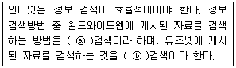

방사선비파괴검사기능사 (2008-10-05 기출문제)
1과목: 방사선투과시험법
1. 방사선투과검사에서 X선보다 γ선의 이용이 갖는 장점으로 틀린 것은?
- 이동성이 좋다
- 외부 전원이 필요하지 않다.
- X선에 비해 투과 능력이 크다.
- X선에 비해 투과사진의 명료도가 매우 높다.
(정답률: 알수없음)

2. 다음 중 방사선투과시험의 상질계 : I.Q.I로 볼 수 없는 것은?
- 계조계
- 선질계
- 스크린
- 투과도계
(정답률: 알수없음)
3. 필름상에 생긴 X선 회절에 의한 얼룩점(반점)을 제거하기 위한 방법으로 가장 적합한 것은?
- 관전압을 올린다.
- 초점거리를 줄인다.
- 투과도계를 사용한다.
- 금속형광 증감지를 사용한다.
(정답률: 알수없음)
4. 다음 중 투과도계에 관한 설명으로 틀린 것은?
- 유공형과 선형으로 나눌 수 있다.
- 일반적으로 선원쪽 시험면 위에 배치한다.
- 시험유효 범위의 양 끝에 투과도계의 가는 선이 바깥 쪽이 되도록 한다.
- 재질의 종류로는 유공형 투과도계가 선형에 비하여 제한을 많이 받는다.
(정답률: 55%)
5. X선 발생장치의 관을 고진공 상태로 설계, 제작하는 이유로 가장 거리가 먼 것은?
- 고속전자의 에너지 손실을 방지하기 위하여
- 필라멘트의 산화 및 연소를 방지하기 위하여
- 전극간의 전기적 절연을 방지하기 위하여
- 열 발생을 방지하기 위하여
(정답률: 알수없음)
6. 다음 중 방사선투과시험시 X선관의 초점이 작으면 어떤 현상이 발생하는가?
- 수명이 짧아진다.
- 상이 흐려진다.
- 투과력이 좋아진다.
- 명료도가 좋아진다.
(정답률: 알수없음)
7. 10cm 거리에서 900mR/h를 방출하는 방사선원으로부터 100mR/h의 선량율을 받으려면 거리는 몇cm 떨어져야 하는가?
- 30
- 40
- 50
- 90
(정답률: 알수없음)
8. 다음 중 촬영된 필름을 현상할 때 소요 시간이 가장 짧은 것은?
- 현상처리
- 정지처리
- 정착처리
- 수세처리
(정답률: 알수없음)
9. 형광증감지에 관한 설명 중 틀린 것은?
- 연박증감지보다 노출시간을 단축시킬 수 있다.
- 연박증감지에 비해 명료도가 나쁘다.
- 증감지에 의한 얼룩이 생기기 쉽다.
- γ선투과 촬영에 주로 많이 사용한다.
(정답률: 알수없음)
10. 3Ci 의 Ir-192 선원은 1년 후 약 몇 mCi가 되겠는가? (단, Ir-192의 반감기는 75일이다.
- 52
- 103
- 213
- 425
(정답률: 알수없음)
11. X선관내 양극의 표적물질에 대한 설명으로 틀린 것은?
- 원자번호가 높아야 한다.
- 용융 온도가 높아야 한다.
- 열전도성이 좋아야 한다.
- 높은 증기압이어야 한다.
(정답률: 46%)
12. 다음 중 굴삭기의 몸체에 칠해진 페인트 막의 품질을 비파괴시험하기 위하여 막 두께를 측정하고자 할 때 가장 적합한 검사법은?
- 자분탐상시험
- 침투탐상시험
- 방사선투과시험
- 와전류탐상시험
(정답률: 알수없음)
13. 일반적인 경우 다음 중 침투탐상시험으로 결함의 검출이 가장 어려운 것은?
- 철강 주물품
- 플라스틱 부품
- 알루미늄 단조품
- 다공(多孔)성 부품
(정답률: 알수없음)
14. 다음 중 초음파탐상시험의 단점에 대한 설명으로 틀린 것은?
- 불감대가 존재한다.
- 내부조직 구조에 따른 영향을 많이 받는다.
- 내부결함의 위치, 크기, 방향을 측정하기 어렵다.
- 초음파의 효과적인 전달을 위해 일반적으로 접촉매질을 필요로 한다.
(정답률: 알수없음)
15. 침투탐상시험에서 일반적인 시험체의 전처리 방법으로 적절하지 않은 것은?
- 쇠솔질
- 용제 세척법
- 증기 탈지법
- 알칼리 세척법
(정답률: 알수없음)
16. 파장이 짧은 전자파의 투과능력과 재질에서 흡수되는 정도를 이용하는 비파괴검사법은?
- 자분탐상시험
- 와전류탐상시험
- 초음파탐상시험
- 방사선투과시험
(정답률: 알수없음)
17. 자분탐상시험법에 대한 설명으로 옳은 것은?
- 잔류법은 시험체에 외부로부터 자계를 준 상태에서 결함에 자분을 흡착시키는 방법이다.
- 연속법은 시험체에 외부로부터 주어진 자계를 소거한 후 결함에 자분을 흡착시키는 방법이다.
- 잔류법은 시험체에 잔류하는 자속밀도가 결함누설자속에 영향을 미친다.
- 연속법은 결함누속자속을 최소로 하기 위해 포화자속밀도가 얻어지는 자계의 세기를 필요로 한다.
(정답률: 알수없음)
18. 다음 중 일반적으로 방사선투과검사로 결함을 판별할 때 가장 어려운 경우는?
- 결함의 수
- 결함의 종류
- 결함의 깊이
- 결함의 크기
(정답률: 알수없음)
19. 다음 중 알루미늄합금의 재질을 판별하거나 열처리 상태를 판별하기에 가장 적합한 검사법은?
- 적외선검사
- 스트레인측정법
- 와전류탐상검사
- 중성자투과검사
(정답률: 알수없음)
20. 다음 중 초음파탐상검사법을 원리에 의한 분류가 아닌 것은?
- 투과법
- 공진법
- 표면파법
- 펄스반사법
(정답률: 80%)
2과목: 방사선안전관리 관련규격
21. 다음 비파괴검사법 중 시험체를 검사할 때 직접 육안으로 결함부의 관찰이 가능한 것은?
- 자분탐상시험법
- 방사선투과시험법
- 와전류탐상시험법
- 초음파탐상시험법
(정답률: 알수없음)
22. 중심 도체에 의한 자분탐상시험시 파이프에서 자계가 가장 큰 부분은?
- 파이프의 외측 표면
- 파이프 내의 중간 지점
- 파이프의 내측 표면
- 파이프 외면 밖의 일정 거리
(정답률: 알수없음)
23. 누설검사의 단위 중 1기압의 값이 틀린 것은?
- 760mmHg
- 760Torr
- 980kg/cm2
- 1013mbar
(정답률: 알수없음)
24. 관통된 불연속만 탐지할 수 있어 주로 최종 건전성 평가 시험으로 사용되는 비파괴검사법은?
- 육안검사
- 누설검사
- 자분탐상검사
- 침투탐상검사
(정답률: 알수없음)
25. 초음파탐상시험에서 표준이 되는 장치나 기기를 조정하는 과정을 무엇이라 하는가?
- 감쇠
- 교정
- 상관관계
- 경사각탐상
(정답률: 알수없음)
26. 강용접 이음부의 방사선투과 시험방법(KS B 0845)에 따라 강판의 맞대기 용접 이음부를 촬영했을 때 계조계에서의 농도가 2.5이고, 결함이 없는 모재부의 농도가 2.0이었다면 계조계의 값은 얼마인가?
- 0.2
- 0.25
- 0.8
- 2.0
(정답률: 알수없음)
27. 강용접 이음부의 방사선투과 시험방법(KS B 0845)에 따라 강판의 T용접 이음부의 촬영에 필요한 조건의 설명으로 틀린 것은?
- 투과사진의 상질은 F급으로 한다.
- 시험부의 결함의 상 이외 부분의 사진 농도는 1.0이상 4.0 이하이어야 한다.
- 투과도계를 필름측에 두는 경우는 투과도계와 필름간의 거리를 식별 최소 선지름의 5배 이상으로 한다.
- 1회의 촬영에서 시험부의 유효길이는 투과도계의 식별 최소 선지름 및 투과사진의 농도범위의 규정을 만족하는 범위로 한다.
(정답률: 알수없음)
28. 1Sv는 몇 mSv인가?
- 1
- 10
- 100
- 1000
(정답률: 알수없음)
29. 단시간 내에 전신에 받는 방사선 피폭선량과 이 때 발생하는 급성 장해의 영향에 대한 설명으로 틀린 것은?
- 피폭선량이 0~0.25Sv 인 경우, 임상적 증상은 거의 없다.
- 피폭선량이 0.25~0.5Sv 인 경우, 임파구(백혈구)의 수는 일시적으로 감소한다.
- 피폭선량이 1~2Sv 인 경우, 구역질 등 방사선 숙취현상이 나타난다.
- 피폭선량이 2~4Sv 인 경우, 피폭자는 100% 사망한다.
(정답률: 알수없음)
30. 알루미늄 평판 접한 용접부의 방사선투과 시험방법(KS D0242)에서 실제로 덧살을 측정하지 않은 경우 용접부의 형상이 한쪽면 덧살 있음이고, 모재의 두께가 10mm미만 일때 사용되는 계조계의 종류로 옳은 것은?
- D1형
- D2형
- E2형
- E3형
(정답률: 28%)
31. 주강품의 방사선투과 시험방법(KS D 0227)에서 투과사진의 상질을 A급 및 B급으로 구분하여 사용할 때 이에 대한 설명으로 틀린 것은?
- 제품의 용도에 따라 구분하여 사용한다.
- 주로 제품 모양에 따라 구분하여 사용한다.
- 평판시험체에 가까운 것에는 B급을 적용한다.
- 제품의 두께가 균일하지 못한 시험체에는 일반적으로 A급을 적용한다.
(정답률: 알수없음)
32. 주강품의 방사선투과 시험방법(KS D 0227)에서 갈라짐이 존재하는 경우 홈의 영상 분류로 옳은 것은?
- 1류
- 2류
- 4류
- 6류
(정답률: 알수없음)
33. 강용접 이음부의 방사선투과 시험방법(KS B 0845)에서 강판의 맞대기 용접 이음부를 촬영할 때 투과도계의 사용에 대한 설명으로 옳은 것은?
- 투과도계의 가는 선이 시험체의 안쪽에 높이도록 한다.
- 시험부 유효길이가 투과도계 나비의 5배 이상인 경우 중앙에 1개를 놓는다.
- 특별히 투과도계를 필름 쪽에 놓을 때는 투과도계 각각의 부분에 B의 기호에 붙인다
- 일반적으로 시험부 선원측 표면에 용접 이음부를 넘어서 유효길이 내의 양 끝 부근에 각 1개를 놓는다.
(정답률: 알수없음)
34. 다음 중 방사선 작업자의 개인피폭선량 측정에 적합하지 않은 측정기는?
- 필름배지
- 포켓선량계
- 서베이미터
- 열형광선량계
(정답률: 알수없음)
35. Ir-192로 방사선투과검사시 방사선이 노출되는 동안 방사선 피폭을 줄이기 위하여 두께 45mm 철판을 놓았다. 동일 거리에서 방사선에 직접 노출되는 경우에 비해 철판을 놓은 경우 피폭되는 양은 어떻게 되는가? (단, 철의 반가층은 15mm이다.)
- 약 1/2로 감소한다.
- 약 1/4로 감소한다.
- 약 1/8로 감소한다.
- 약 1/16로 감소한다.
(정답률: 알수없음)
36. 강용접 이음부의 방사선투과 시험방법(KS B 0845)에 의거 강판의 맞대기이음 용접부를 투과검사 할 경우 상질의 종류가 A급일 때 요구되는 규정된 투과 사진의 농도범위로 옳은 것은?
- 1.0 이상 2.5 이하
- 1.3 이상 4.0 이하
- 2.0 이상 3.5 이하
- 1.8 이상 4.5 이하
(정답률: 알수없음)
37. 강용접 이음부의 방사선투과 시험방법(KS B 0845)에서 강판 맞대기 용접 이음부를 촬영할 때 계조계의 종류에 따른 사용 방법이 옳은 것은?
- 15형은 모재의 두께 20mm 이하에 사용한다.
- 20형은 모재의 두께 15mm 초과 30mm 이하에 사용한다.
- 25형은 모재의 두께 20mm 초과 40mm 이하에 사용한다.
- 30형은 모재의 두께 30mm 초과 50mm 이하에 사용한다.
(정답률: 알수없음)
38. 알루미늄 평판 접합 용접부의 방사선투과 시험방법(KS D 0242)으로 투과시험시 상질로 A급이 요구될 때 선원과 투과도계사이의 거리는 시험부의 유효 길이의 최소 몇 배 이상이어야 하는가?
- 2배
- 3배
- 5배
- 7배
(정답률: 알수없음)
39. X선이나 γ선에 의해 외부 피폭되었을 때 선량당량을 계산하기 위한 방사선 가중치(선질계수)로 옳은 것은?
- 1
- 5
- 10
- 20
(정답률: 알수없음)
40. 주강품의 방사선투과 시험방법(KS D 0227)에 의해 투과사진을 등급분류할 때 홈이 선모양의 슈링키지인 경우 시험시야의 크기(지름)가 50mm, 호칭두께가 10mm이하일 때 2류의 허용 한계 길이는?
- 12mm
- 17mm
- 23mm
- 45mm
(정답률: 알수없음)
3과목: 금속재료일반 및 용접 일반
41. 내부 네트워크에 대한 외부로부터의 불법적인 접근을 방어보호하는 장치로 외부의 접근을 체계적으로 차단하는 것을 무엇이라 하는가?
- 해킹
- 펌웨어
- 스토킹
- 방화벽
(정답률: 알수없음)
42. 컴퓨터를 사용할 때 일반적으로 올바른 작업 자세가 아닌 것은?
- 손등은 팔과 수평이 되도록 유지한다.
- 무릎의 각도는 90도 이상을 유지하도록 한다.
- 키보드의 위치는 심장보다 높게 위치해야 한다.
- 화면보다 눈높이가 조금 높아 화면을 약각 아래로 보는 것이 좋다.
(정답률: 알수없음)
43. 인터넷에서 제공되는 서비스에 대한 설명으로 옳지 않은 것은?
- Telnet : 자신의 컴퓨터와 원격지 컴퓨터 사이의 접속기능서비스
- E-mail : 인터넷 사용자 사이에 편지를 주고 받는 기능 서비스
- 인터넷 전자게시판(BBS) : 동호회, 자료실, 대화방의 기능서비스
- FTP : 문자, 음성, 화상정보를 검색하는 기능 서비스
(정답률: 알수없음)
44. 다음 중 컴퓨터의 주변 장치에 속하지 않는 것은?
- 입력 장치
- 보조 기억 장치
- 제어 장치
- 출력 장치
(정답률: 알수없음)
45. 다음 중 ( ) 안에 들어갈 적절한 용어로 짝지어진 것은?

- ⓐ 파일, ⓑ고퍼
- ⓐ 뉴스, ⓑ웹 문서
- ⓐ 웹 문서, ⓑ뉴스
- ⓐ 고퍼, ⓑ파일
(정답률: 알수없음)
46. 마우러 조직도(mauer's diagram)에 대한 설명으로 옳은 것은?
- 주철에서 C 와 P량에 따른 주철의 조직관계를 표시한 것이다.
- 주철에서 C 와 Mn량에 따른 주철의 조직관계를 표시한 것이다.
- 주철에서 C 와 Si량에 따른 주철의 조직관계를 표시한 것이다.
- 주철에서 C 와 S량에 따른 주철의 조직관계를 표시한 것이다.
(정답률: 알수없음)
47. 구상흑연주철이 주조상태에서 나타나는 조직이 아닌 것은?
- 페라이트
- 펄라이트
- 시멘타이트
- 헤마타이트
(정답률: 알수없음)
48. 금속 가공에서 재결정 온도보다 낮은 온도에서 가공하는 것을 무엇이라고 하는가?
- 냉간가공
- 열간가공
- 고온가공
- 풀림가공
(정답률: 알수없음)
49. 다음의 순금속에서 열전도율이 가장 좋은 것은?
- Cu
- Ag
- Au
- Fe
(정답률: 알수없음)
50. 포금(gun metal)에 대한 설명으로 틀린 것은?
- 내해수성이 우수하다.
- 성분은 8~12%Sn 청동에 1~2Zn을 첨가한 합금이다.
- 용해주조시 탈산제로 사용되는 P의 첨가량을 많이 하여 합금 중에 P을 0.0⑤~0.5% 정도 남게 한 것이다.
- 수압, 수증기에 잘 견디므로 선박용 재료로 널리 사용된다.
(정답률: 알수없음)
51. Al에 Ni, Mg, Cu등을 첨가한 주조용 알루미늄 합금으로 내연기관의 피스톤, 공랭 실린더 헤드 등에 널리 사용되는 합금의 명칭은?
- 실루민
- 와이(Y)합금
- 문쯔메탈
- 하이드로 날륨
(정답률: 50%)
52. 다음 중 17%Cr-4%Ni PH 강에 대한 설명으로 옳은 것은?
- 페라이트계 스테인리스강이다.
- 마텐자이트계 스테인리스강이다.
- 오스테나이트계 스테인리스강이다.
- 석출경화형 스테인리스강이다.
(정답률: 알수없음)
53. Al-Si계 합금의 설명으로 틀린 것은?
- 10~13%의 Si가 함유된 합금을 실루민이라 한다.
- Si의 함유량이 증가할수록 팽창계수와 비중이 낮아진다.
- 다이캐스팅시 용탕이 급랭되므로 개량처리하지 않아도 조직이 미세화된다.
- 금속나트륨이나 수산화나트륨 등을 용탕 안에 넣고 10~50분 후 주입하면 조직이 조대화된다.
(정답률: 알수없음)
54. 금속 및 합금의 자유도(F)를 계산하는 방법으로 옳은 것은? (단, 성분수는 C, 상의 수는 P이다.)
- F = C –1 + P
- F = C –2 + P
- F = C + 2 –P
- F = C + 1 - P
(정답률: 알수없음)
55. 금속은 결정격자에 따라 기계적 성질이 달라진다. 전연성이 커서 금속을 가공하는데 좋은 결정격자는 무엇인가?
- 단사정방격자
- 조밀육방격자
- 체심입방격자
- 면심입방격자
(정답률: 알수없음)
56. 지름이 큰 재료일수록 담금질의 깊이가 달라지게 되는 가장 큰 이유는?
- 질량효과 때문이다.
- 타임 퀜칭 때문이다.
- 항온효과 때문이다.
- 천칭관계 때문이다.
(정답률: 알수없음)
57. 시험편의 평행부 지름이 18mm, 최대하중9400kgf 일 때 인장강도는 약 몇 kgf/mm2인가?
- 37
- 42
- 47
- 52
(정답률: 알수없음)
58. 용접의 결함 중에서 구조상 결함이 아니고 치수상 결함인 것은?
- 기공
- 변형
- 용입불량
- 용접균열
(정답률: 알수없음)
59. 산소와 아세틸렌 불꽃의 종류가 아닌 것은?
- 중성 불꽃
- 탄화 불꽃
- 산화 불꽃
- 질화 불꽃
(정답률: 알수없음)
60. 교류 아크 용접기에서 무부하 전압이 80V이고, 아크 전압 30V일 때 아크 전류 200A를 사용한다면, 이 용접기의 효율은? (단, 내부 손실은 4kw이다.)
- 40%
- 50%
- 60%
- 70%
(정답률: 알수없음)